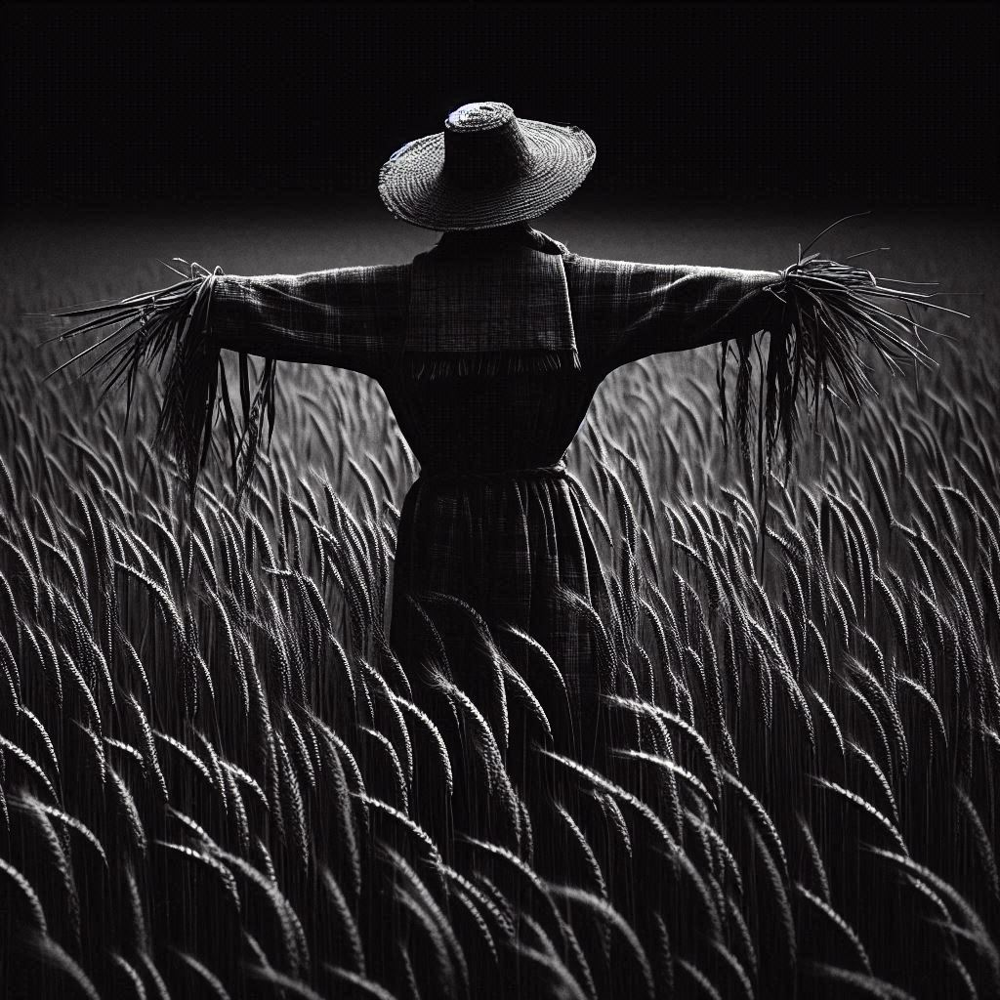
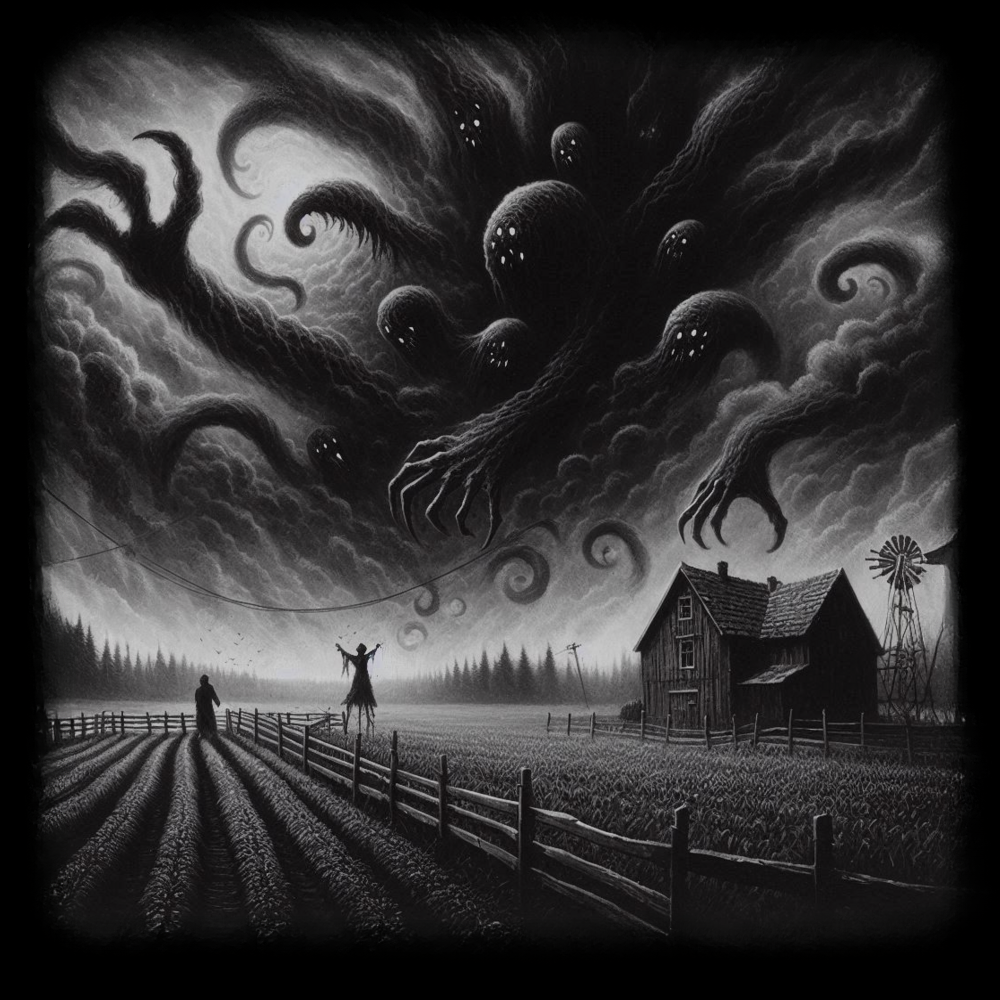

Cathode Reality Tales
Story 2- "Darkness"
(written by: Shelcey Anthony)
- - - -
In a dimly lit room, the only source of light is the flickering of an old television set casting eerie shadows along the walls. The screen crackles to life revealing a figure upon the screen shrouded in a haze of static and smoke. “Welcome, viewers, to Cathode Reality Tales.” The voice was smooth, almost hypnotic. The figure stepped closer, and the static resolved into the form of a middle-aged man dressed in a sleek, dark suit.
“Tonight,” the man continued, his eyes piercing through the screen, “we peel back the layers of your screen to reveal a world where reality twists and turns, and the familiar becomes the grotesque. I am your guide, Ray Toob. In a sleepy town, where scarecrows and shadows both breathe we will explore fear and evil.”
“As night falls and shadows stretch, our young protagonist will find herself like so many, questioning the very fabric of reality. What happens when the guardian becomes the prisoner, and the lines between protector and predator blur?”
Ray paused, letting the tension build, “Brace yourselves for a journey into the unknown with ‘Darkness’.”
- - - -
- - - -
Willow stepped out of the car, a sigh of relief escaping her lips. The familiar scent of fresh-cut grass and the comforting warmth of the summer sun washed over her. Her grandparents' farm, a sprawling property surrounded by fields and woods, had always held a special place in her heart.
"Finally!" she exclaimed, turning to her parents. "I can't wait to spend the summer here."
Her grandparents, George and Phyllis Branta, greeted her with warm smiles. "Welcome, Willow," they said in unison. "It's good to have you back."
As Willow stepped into the farmhouse, she was struck by the comforting aroma of freshly baked bread and the familiar creak of the old wooden floorboards. She couldn't help but feel a sense of peace and tranquility wash over her.
The next morning, Willow woke to the sound of birds chirping and the distant rumble of farm machinery. Pulling on a t-shirt and jeans, she stepped outside. The sun was already high in the sky, casting long shadows across the fields.
A peculiar sight caught her eye: a brand-new scarecrow, unlike any she'd ever seen. Its clothes were neatly pressed, and its face was almost human-like.
"Grandpa," she asked, "who's that new scarecrow?"
"I bought it from old man Jenkins," George replied. "He seemed kind of relieved to get rid of it."
Willow approached the scarecrow, intrigued by its detailed craftsmanship. As she got closer, she noticed a name, "Parker," stitched into the fabric of his shirt. She smiled. "Parker, huh? He looks like he’d be a good guard dog," she joked.
The scarecrow seemed to shift slightly, as if it was breathing. Willow blinked, dismissing it as a trick of the light.
She spent the rest of the morning tending to the chickens and gathering eggs. As she glanced over at the scarecrow, she noticed it had moved slightly closer to the house. She shook her head, dismissing the thought as a trick of the light.
As the sun began to set, Willow decided to head inside. But as she turned, she noticed the scarecrow had moved again. It was now positioned just outside the kitchen window. A chill ran down her spine. She knew then that something was not right.
As darkness enveloped the farm, Willow couldn’t shake the unsettling feeling. She glanced out the window and noticed the scarecrow, Parker, had moved again. This was the third time it had changed position. A sense of curiosity washed over her.
Before heading to bed, Willow asked her grandfather if he had moved the scarecrow. George just chuckled, dismissing her concern as a trick of the light.
That night, as she lay in bed, strange noises echoed through the house. A creaking floorboard, a distant whisper, and the eerie rustling of leaves outside her window. She tried to dismiss the sounds as the usual creaks and groans of an old house, but a sense of intrigue grew within her.
Unable to shake the feeling, Willow got up and crept to the window. The moonlight cast an eerie glow on the field, illuminating Parker. The scarecrow stood tall, its back turned to the house, as if guarding the farm. Willow’s curiosity was piqued. She decided that the next morning, she would ask her grandparents more about old man Jenkins and the mysterious scarecrow.
The next morning, Willow woke up to the sound of birds chirping outside her window. A sense of anticipation filled her as she remembered the strange occurrences of the previous night. She quickly got dressed and joined her grandparents at the breakfast table.
"Grandpa, Grandma," she began, "I was wondering about old man Jenkins. You know, the one who sold us Parker? He lives down the road, right?"
Her grandparents exchanged a knowing glance. "Jenkins is a peculiar fellow," George replied. "He keeps to himself, mostly. Never really talks to anyone."
Willow nodded, intrigued. "Maybe I should go visit him sometime," she mused.
"I wouldn't advise it," Phyllis warned. "He's a bit eccentric, to say the least."
Willow smiled. "I'll be careful."
Later that afternoon, after finishing her chores, Willow retraced Parker's movements. To her surprise, the scarecrow had moved three more times since she last checked. Each time, it was in a different, more strategic position around the farm. As she inspected each spot where Parker had stood, she noticed a small, perfectly circular hole in the ground where the scarecrow's stick had been. Willow marked each spot on a map she had drawn of the farm, hoping to find a pattern.
Satisfied with her work, Willow decided to walk over to old man Jenkins' farm. As she approached the dilapidated farmhouse, a sense of unease washed over her. The house looked neglected, with peeling paint and overgrown weeds. She knocked on the door, but there was no answer. She tried the handle, but it was locked.
Instead of leaving, Willow decided to explore the property. She wandered towards the barn, a large, weathered structure that seemed to loom over the land. As she drew closer, she noticed a strange energy emanating from the building. Curiosity overcoming fear, she pushed open the creaky barn door.
Willow cautiously stepped into the barn, the musty air filling her nostrils. Cobwebs hung from the rafters, casting eerie shadows. As she explored the barn, she stumbled upon a leather-bound book. Its pages were filled with strange symbols and diagrams, written in an unknown language. As she flipped through the pages, she gasped. Scrawled in a hasty, panicked handwriting, the word "Sunder" was etched into the page, accompanied by a crude drawing of a monstrous creature emerging from the sky.
A sense of dread washed over Willow. She continued to flip through the book, her eyes scanning the pages. She noticed a strange pattern, a series of symbols that seemed to correspond to the positions Parker had taken around the farm. A horrifying realization dawned upon her: Parker was not just a scarecrow; it was a conduit, a tool to summon the Sunder. With the book tucked safely under her arm, Willow decided to leave the barn. As she stepped outside, the fading light cast long, eerie shadows across the farm. The once unfamiliar landscape now seemed even more sinister. A chill ran down her spine as she realized the gravity of the situation. She had to warn her grandparents and figure out how to stop the impending doom.
Willow hurried back to her grandparents' farm, a sense of urgency propelling her forward. As she approached the house, she noticed something amiss. The scarecrow, Parker, had moved again. This time, it was standing eerily close to the mailbox. A wave of nausea washed over Willow as she rushed past it. She could have sworn she heard a faint whisper, a chilling whisper that seemed to emanate from the scarecrow itself. She rushed inside, calling out for her grandparents, but there was no response.
A note, scrawled in her grandmother's handwriting, was left on the kitchen table. It read, "Out to the town hall for a meeting this evening. Back late." A chill ran down Willow's spine. She knew she had to act fast. The fate of the farm, and perhaps the world, rested in her hands.
Willow remembered the strange symbols and diagrams in the book she had found at Jenkins' farm. She noticed a pattern in the scarecrow's movements that seemed to mimic a strange symbol in the book. She realized that by moving the scarecrow, she might be able to disrupt the ritual.
With a mix of fear and determination, Willow approached Parker cautiously. As she got closer, she noticed a strange energy emanating from the scarecrow. Suddenly, Parker seemed to move, and a faint whisper, "Don't," echoed in the still air. Willow jumped back in surprise.
Willow knew she had to act quickly. She grabbed the scarecrow's wooden legs and with a Herculean effort, pulled it from the ground. As she dragged Parker across the yard, the scarecrow's whispers grew louder, pleading with her to stop. "Please, don't," it begged. But Willow was determined to break the ritual, no matter the cost. With a final heave, she flung Parker into the barn, slamming the door shut behind her.
As she turned to leave, she noticed a strange, otherworldly glow emanating from the barn. A sense of dread washed over her. She rushed back into the house, grabbed a box of matches, and returned to the barn. Just as she stepped outside, a blinding flash of light erupted from within. The barn was consumed by flames, and the once peaceful night sky was now a terrifying shade of crimson. Willow stood there, relieved, as the fire raged on. She had defeated the darkness.
Willow watched in unease as the barn was consumed by flames. A sense of dread washed over her. She knew that the darkness was far from vanquished.
As the fire raged, the sky darkened, turning an ominous shade of crimson. A tear in the fabric of reality opened, and grotesque, tentacled limbs emerged. The Sunder, a monstrous entity of pure evil, began to manifest. Its form was still obscured by the darkness, but its malevolent presence was felt by all.
Panic seized Willow. She realized that she had made a terrible mistake. Perhaps the scarecrow, Parker, had been a guardian, a protector against the Sunder. By destroying the ritual, she had unleashed an even greater evil. The fate of the world hung in the balance. She had to find a way to stop the Sunder, and fast.
Desperate, Willow rushed towards the burning barn. She tried to reach for the scarecrow, hoping to reverse the terrible mistake she had made. However, the flames were too intense. As the barn collapsed, she managed to grab the mysterious book. With the book clutched tightly in her hand, she stumbled backward, her heart pounding with fear and uncertainty.
Willow frantically flipped through the pages of the book, searching for the page with the disturbing image of the Sunder. She knew that the symbols on that page held the key to stopping the creature. As she turned each page, her heart pounded faster. Finally, she found it. The same terrifying image of the Sunder, surrounded by a circle of strange symbols. Terror gripped Willow as she began to perform the ritual. Her voice shook as she spoke the ancient words, her hands trembling as she traced the symbols in the air. A cold dread settled over her as she felt her body changing. Her skin grew pale and dry, her hair turned to straw. Her limbs felt stiff and heavy, as if they were turning to wood. The book slipped from her grasp, its pages fluttering to the ground. A chilling wind howled around her, and she could feel the ritual changing her.
The sky roared, a deafening sound that shook the very foundations of the earth. The tear in the fabric of reality ripped open farther, and the Sunder spilled out. As the tentacles descended upon the earth, Willow stood frozen, a scarecrow at its mercy. One of its tendrils reached out, ready to claim her as its own. As she was pulled into the darkness she knew she had failed.
Willow opened her eyes. She was in a place she'd never been. A little old man in a long coat and hood was talking to someone. She coldn't make out who it was at first. The man turned and Willow still didn't know who it was. Willow tried to scream at him but no sound came out. The man carried her over his shoulder and threw her in the back of his old Roll Bighorn truck. In the reflection of his windows, Willow realized she was now the scarecrow. Her mind panicked the entire ride back to wherever they were going.
Once they arrived, Willow realized the man must be Old Man Jenkins. he grabbed her and put her out in the field. He then stepped back to admire the scarecrow. "Yup. I'll park 'er right there," he said with a chuckle. "In fact, that sounds like a good name for you, Parker."
"H...elp... M...me," Willow managed to get out, but it wasn't her voice. It was the voice she thought she heard earlier trying to stop her. Mister Jenkins turned and raised a suspicious eyebrow before walking back to his house and leaving Willow alone in the scarecrow. Willow then focused on trying to remember as much of the book as she could, and trying to move. It took her almost all week, but eventually she managed to move her post.
As she started to feel confident that she could undo the spell, she came to the horrific realization that the Sunder was still coming, and on top of that she had to try and stop it before she arrived to stop herself. Willow began the ritual to stop the sunder as Ray Toob appeared walking beside her.
Willow and the world fade to black engulfed in the arms of the Sunder from the distant sky reaching out towards her, metaphorically consuming everything again as Ray begins his monologue, “And so, dear viewers, remember—the boundaries between protector and predator can blur in an instant. In the realm of the Cathode Reality, safety is an illusion, and the darkest faces may hide the most righteous secrets. We are all but puppets to forces unseen, and even the bravest of us may find ourselves trapped in unexpected roles."
Ray’s eyes glint with a knowing intensity as the static begins to build. “Until next time, keep your wits about you and your senses sharp. For you never know what may be waiting... just beyond the screen.”
With a final, lingering glance, Ray Toob fades into the static, leaving viewers with a chilling sense of unease and a reminder of the mysteries lurking in the shadows.
